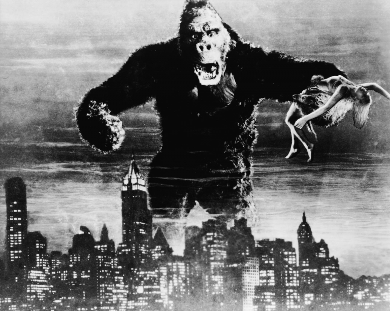
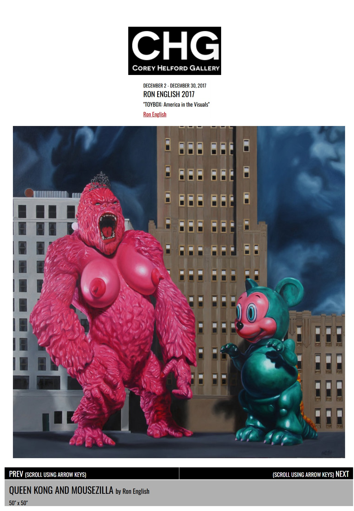

Exhibitions
TOYBOX: America in the Visuals, Corey Helford Gallery, Los Angeles, California, US, December 2–30, 2017.
TOYBOX: America in the Visuals, Corey Helford Gallery, Los Angeles, California, US, December 2–30, 2017.
Literature
Ron English, Original Grin: The Art of Ron English (Paris: Cernunnos, 2019), p. 319. ISBN 978-2374950938.

Bird Man, “Interview: Ron English on The Work From His New Show "TOYBOX" @ Corey Helford Gallery”, Juxtapoz, no. December, 2017.

Bird Man, “Interview: Ron English on The Work From His New Show "TOYBOX" @ Corey Helford Gallery”, Juxtapoz, no. December, 2017.

Ancillary Documentation




